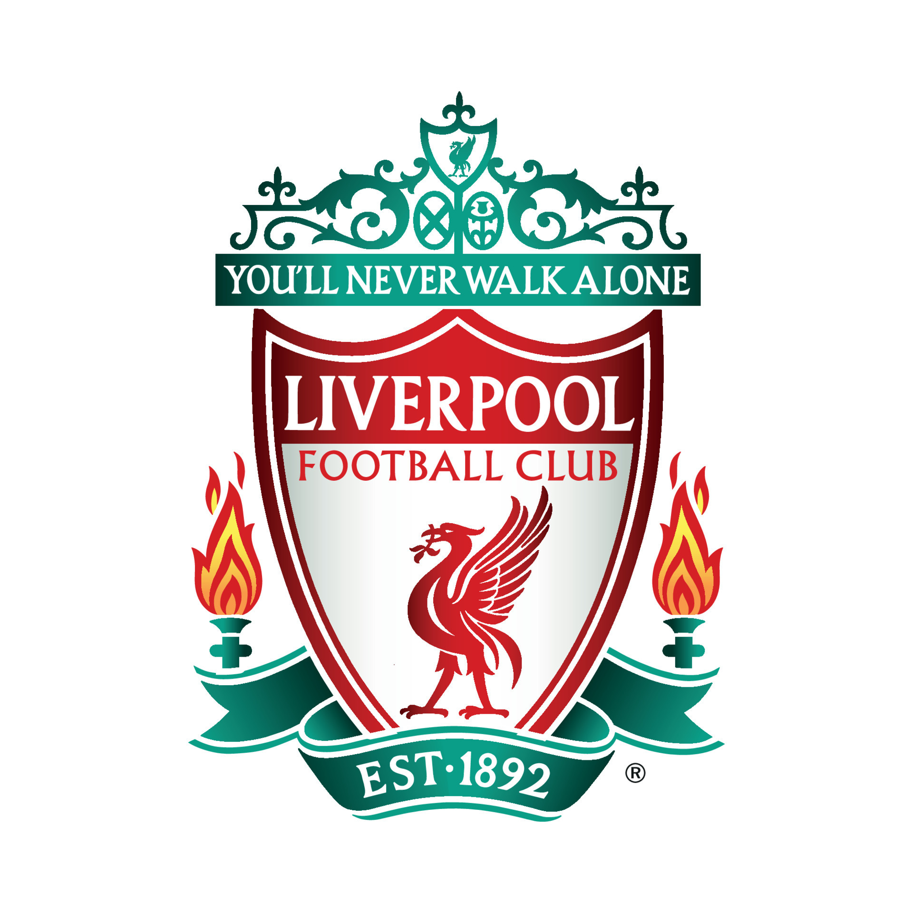

Liverpool

Olá leitor! Tudo bem?
Aqui temos um pouco da história sobre o Liverpool Football Club!
Data de Fundação
03 de Junho de 1892
Competição Atual
Atualmente o Liverpool está apenas na Premier League, que é o campeonato Inglês. A temporada na Inglaterra está no fim, e em outros campeonatos ou copas do país, o Liverpool foi campeão da Copa da Liga Inglesa, e foi eliminado da Copa da Inglaterra!
Maior Estrela
Kenny Dalglish, frequentemente chamado de “King Kenny”, Dalglish é uma lenda do Liverpool, tendo conquistado numerosos títulos como jogador e treinador.
|
|